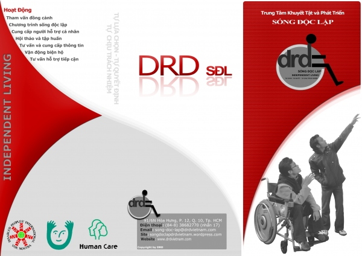

Giao diện chuẩn (Phím tắt alt+0)
Tương phản cao (Phím tắt alt+0)
Chế độ ban đêm (Phím tắt alt+0)
Tăng kích cỡ chữ (Phím tắt alt+w) Đặt lại cỡ chữ chuẩn (Phím tắt alt+r) Giảm kích cỡ chữ (Phím tắt alt+e)
Danh sách ủng hộ (Phím tắt alt+q)
Tiếng Việt (Phím tắt alt+1) English (Phím tắt alt+1)
Bạn đang ở: Lĩnh vực hoạt động » Sống độc lập » Giới thiệu
Menu top ( Phím tắt 6 )
Menu Chính ( Phím tắt 7 )
Nội dung ( Phím tắt 9 )
Ai trong chúng ta cũng mong muốn có một cuộc sống vui tươi và đầy ý nghĩa. Rất nhiều người đã may mắn đạt được điều mình mong muốn, nhưng cũng không ít người vì những rào cản vô hình hay hữu hình mà chưa thực hiện được. Trong số đó có người khuyết tật (NKT), những người được coi là đối tượng thiệt thòi nhất xã hội.
NKT, giống như những thành viên khác của xã hội, họ cũng có những nhu cầu cơ bản nhất của một con người như tự mình lựa chọn những món đồ mình yêu thích, nấu một bữa ăn ngon, cùng gia đình, bạn bè tham gia các hoạt động của cộng đồng, xã hội; nhu cầu về học tập, lao động và cống hiến. NKT là một cá thể độc lập, có thể tự lựa chọn, tự quyết định và tự chịu trách nhiệm về tất cả mọi việc từ suy nghĩ, hành động đến lối sống…Tuy nhiên, do khiếm khuyết của cơ thể, do suy nghĩ bi quan về khả năng và giá trị của NKT, nhất là do những rào cản vô hình và hữu hình đã khiến NKT không thể hoặc mất đi khả năng sống độc lập.
“Sống độc lập” ở đây không có nghĩa là người khuyết tật tự sống một mình, tự làm tất cả mọi việc không cần sự hỗ trợ nào khác từ những người xung quanh. “Sống độc lập” có nghĩa là người khuyết tật có quyền quyết định về cuộc sống của mình từ việc chăm sóc bản thân đến việc hòa nhập cộng đồng thông qua sự trợ giúp của Người hỗ trợ cá nhân (Personal Assistant hay PA).
Trước đây, người ta cho rằng chỉ có những chuyên gia như bác sĩ, y tá, bác sĩ trị liệu, nhà tư vấn mới có thể thấu hiểu và giúp đỡ được người khuyết tật. Nhưng vào năm 1972, tại Backerley, Bang California, Mỹ lần đầu tiên xuất hiện trung tâm sống độc lập cung cấp các dịch vụ do người khuyết tật quản lý. Họ cho rằng chính những người khuyết tật sẽ là chuyên gia của người khuyết tật, chỉ những người khuyết tật mới có thể hiểu được nhu cầu của người khuyết tật. Các trung tâm sống độc lập xuất hiện liên tiếp tại Mỹ, rồi sau đó bắt đầu lan rộng sang Canada và Châu Âu. Năm 1986 lần đầu tiên tại Nhật Bản, một trung tâm sống độc lập với tên gọi Hội chăm sóc con người ra đời. Sau đó nó bắt đầu lan rộng sang các nước Châu Á như Hàn Quốc, Thái Lan, Pakistan…Và ở Việt Nam, Trung tâm SĐL đầu tiên của NKT được hình thành vào năm 2009 tại Hà Nội.

Mặt trước Brochure SĐL
Với sứ mạng luôn nỗ lực thúc đẩy bình đẳng cơ hội cho NKT, khuyến khích và tạo điều kiện để NKT tham gia vào tất cả các hoạt động giống như những thành viên khác của xã hội; hướng tới hình thành các trung tâm SĐL tại Việt Nam, Trung tâm Khuyết Tật và Phát Triển (DRD) thực hiện thí điểm mô hình Sống độc lập dưới sự hỗ trợ của Nippon Foundation và Hiệp hội Chăm sóc con người Nhật Bản (Human Care Association).
Mặt trong Brochure SĐL
Chương trình bắt đầu đi vào hoạt động từ ngày 01/08/2010.
Chi tiết xin liên hệ:
CHƯƠNG TRÌNH SỐNG ĐỘC LẬP
TRUNG TÂM KHUYẾT TẬT VÀ PHÁT TRIỂN (DRD)
91/8E Hòa Hưng, F.12, Q.10, Tp.HCM.
Điện thoại: (08) 38 683 149 (nhấn phím 132)
----------
Tìm hiểu lịch sử của phong trào Sống Độc Lập trên thế giới